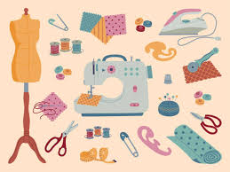
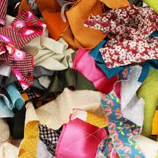

Dernière actualité
Atelier Tie-Dye ! (05/05)
Grand succès de l'atelier Tie-Dye ! Nous avions organiser un cours de tie-dye pour apprendre à transformer vos textiles usagés en pièces uniques et colorées.

Grand succès de l'atelier Tie-Dye ! Nous avions organiser un cours de tie-dye pour apprendre à transformer vos textiles usagés en pièces uniques et colorées.

Ici la mode se réinvente avec conscience et créativité. Notre association s'engage à transformer le textile oublié en pièces uniques grâce à l'upcycling. Curieux d'en apprendre un peu plus sur nous ?
Envie de donner une seconde vie à votre garde-robe ? Rejoignez nos ateliers ! Que vous soyez tenté par le crochet, le tricot, la couture ou la customisation de vêtements, nous vous transmettons les techniques pour recycler vos vetements !

Parcourez notre sélection de créations originales, ou soutenez notre démarche en nous confiant vos dons de matières textiles. Chaque geste compte pour une mode plus durable !
